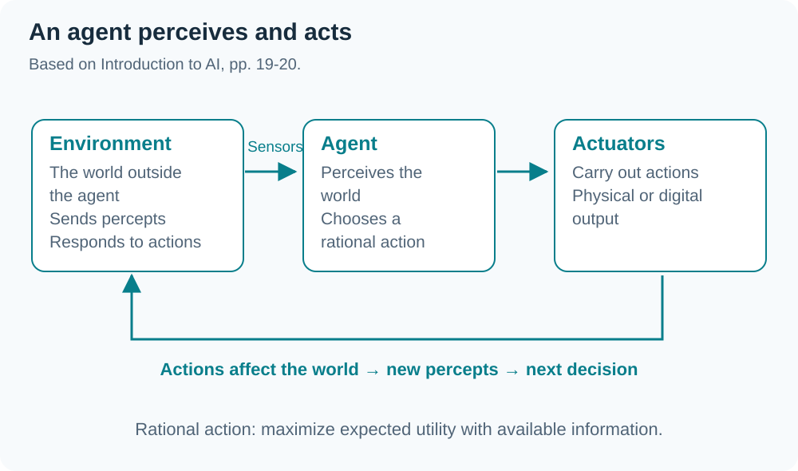
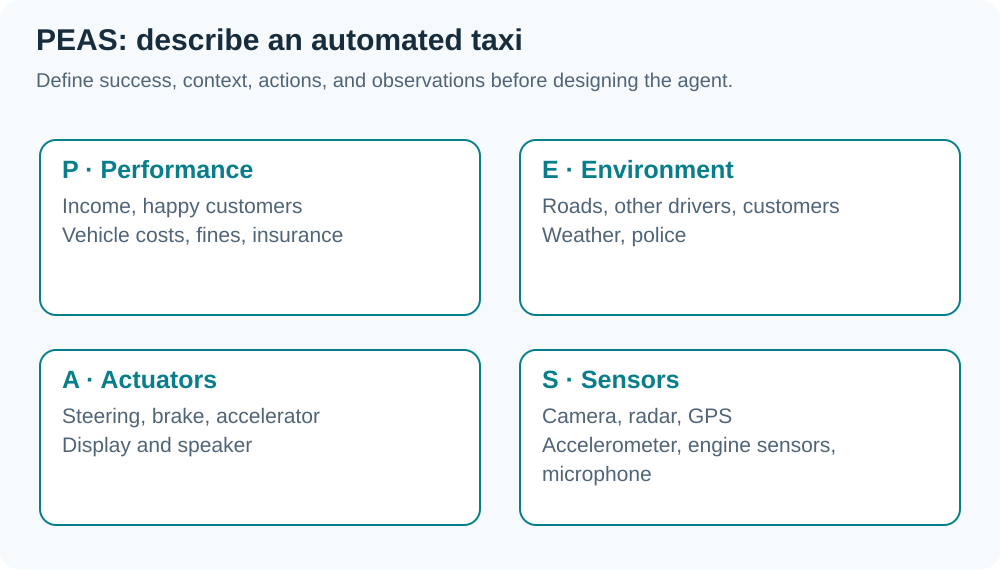

Based on
INT182_Lecture8_Intro-AI.pdf(51 pages), adapted from Berkeley CS188 and Duke COMPSCI 270, with the G2 online lecture transcript dated 2 October 2026. Diagrams summarize relationships in the slides. News and video examples reflect the lecture context, not a current-news verification.
01 What does AI mean in this course?
Slide 5 asks what AI is, how it developed, and how to design AI systems. Movies suggest robots capable of everything, while real systems often serve specific tasks: harvesting robots, inventory drones, speech recognition, and planning (slides 6–14, 36–37).
This chapter emphasizes acting rationally: choosing actions appropriate to goals and available information. Human-like behavior and effective decision making are different evaluation dimensions. AI can excel at a task without resembling humans in every way.
02 History and foundations
Slides 16–18 connect AI with philosophy, mathematics, neuroscience, economics, control theory, psychology, and linguistics.
| Period | Overview in the slides |
|---|---|
| 1940–1950 | Circuit models of the brain and Turing's work |
| 1956 | Dartmouth adopts the term Artificial Intelligence |
| 1950–1970 | Game programs and theorem proving |
| 1970–1990 | Knowledge-based / Expert Systems and AI Winter |
| 1990–2012 | Statistical approaches, uncertainty, agents, and learning |
| 2012 onward | Big data, compute, and deep learning |
(From the transcript) Data, algorithms, and computing power jointly enable present systems. The slide history is an overview, not an exhaustive chronology.
03 Agents and rational agents
An agent perceives its environment through sensors and acts on it through actuators (slides 19–20).

The agent function maps percept sequences → actions and is implemented by an agent program running on a machine. A rational agent selects actions that maximize expected utility given available information. Rationality therefore depends on goals, uncertainty, and environmental constraints.
04 PEAS: define the task before designing
PEAS stands for Performance measure, Environment, Actuators, and Sensors (slides 22–24).

| Example | P | E | A | S |
|---|---|---|---|---|
| Pacman | −1/step, +10 food, +500 win, −500 die, +200 scared ghost | Game dynamics and ghosts | Left, right, up, down | Almost the entire state, except remaining power-pellet duration |
| Diagnosis support | Patient health, cost, reputation | Patients, staff, insurers, courts | Display, email | Keyboard/mouse in the slide model |
Sensors need not be physical cameras, and actuators need not be robot arms. Digital inputs and outputs can perform these roles.
05 Environment properties shape agent design
Slides 25–26 connect environment properties with appropriate techniques:
| Property | Design consequence |
|---|---|
| Fully / partially observable | Partial observation requires memory or internal state |
| Single / multi-agent | Account for other agents; random actions may help in some settings |
| Deterministic / stochastic | Uncertainty requires preparation for possible outcomes |
| Static / dynamic | Static worlds allow computation time; dynamic worlds can change while deciding |
| Discrete / continuous | Continuous time/control may require a continuously operating controller |
| Known / unknown physics | Unknown transition dynamics require exploration/learning |
| Known / unknown performance measure | An unclear goal requires observing or interacting with the principal |
(From the transcript) Autonomous driving involves other drivers, weather, and changing traffic, making it more complex than fixed commands in a fully specified world.
06 Reflex, state, and goal-based agents
| Agent | Action selection uses | Capability / limitation |
|---|---|---|
| Simple reflex | Current percept + condition-action rules | Cannot retain currently hidden information |
| Reflex with state | Internal state + world dynamics + action effects | Uses past information when the world is partially observed |
| Goal-based | State/model + goals + predicted action outcomes | Considers which action moves toward a goal |
Example from slide 28:
class GoWestAgent(Agent):
def getAction(self, percept):
if Directions.WEST in percept.getLegalPacmanActions():
return Directions.WEST
else:
return Directions.STOP
This rule moves west whenever possible, without reasoning about food or ghosts. A lookup table covering all situations could be impractically large, and Pacman has hidden information such as power-pellet duration (slides 27–33).
07 Four perspectives on AI
Slide 38 uses two axes: thinking/acting and human-like/rational.
| Human-like | Rational | |
|---|---|---|
| Thinking | Think like humans | Think rationally |
| Acting | Act like humans | Act rationally |
The Turing Test focuses on behavior difficult for a judge to distinguish from a human. The Chinese room asks whether rule-based symbol manipulation that produces correct answers entails understanding. ELIZA illustrates how limited conversational imitation can feel human to a user (slides 39–42). The chapter prioritizes evaluating task actions over resolving consciousness.
08 Traditional AI and related areas
AI includes symbolic/rule-based methods and learning from data. Slides 45–47 list:
- Search: find a solution path, such as solving a Rubik's cube.
- Constraint satisfaction / optimization: schedule meetings under constraints.
- Game playing: chess or poker.
- Logic / knowledge representation: represent facts and infer conclusions.
- Planning: arrange actions toward a goal.
- Probability / decision theory: decide under uncertainty.
These areas can overlap. (From the transcript) Knowledge-based rules are contrasted with fitting models from data; an AI system need not use machine learning.
09 Capabilities and limitations
Slides 35 and 43–44 use games and well-defined tasks as examples of success. Messy, ambiguous real-world tasks and common sense remain challenging. Explaining reasoning, adapting strategies, and transferring knowledge across contexts are comparison points with human abilities.
(From the transcript) News, generated images, and deployment examples prompt consideration of capability and reliability. Distinguish apparent behavior from performance demonstrated by testing.
10 Phase 2 project progress
(From the transcript) Progress should show improvement since Phase 1 and movement toward the objective, beyond adding slides:
| Dimension | Evidence to show |
|---|---|
| Algorithms | Clearer choices and reasons |
| Data | Sources, counts per class, tangible examples |
| Software | Started modules/code, with structural diagrams where available |
| References | Technical sources, domain knowledge, and related systems |
| Pipeline | Input-to-output steps and progress at each step |
| Evaluation | Train/test separation and evidence supporting reliable performance |
Examples such as 80/75/80 rock-paper-scissors images or several hundred spam/non-spam messages illustrate readiness; they are not mandatory minimum counts for every team. This lecture gives the presentation block as 19–26 October; W09 records the later specific announcement.
11 Final exam announcement
(From the opening and closing transcript) The lecturer permits one A4 sheet with handwritten or printed notes on both sides, a calculator, and a printed English dictionary. Do not borrow or share notes in the exam room. The note sheet will be collected after the exam.
This 2 October statement is clearer than the tentative discussion in W07. Use the course's official announcement for exam dates, times, and final rules.
Glossary
| Term | Meaning |
|---|---|
| Agent | Entity that perceives and acts on its environment |
| Rational agent | Agent selecting actions to maximize expected utility |
| Percept | Information perceived through sensors |
| Actuator | Means through which an agent acts on the world |
| PEAS | Performance, Environment, Actuators, Sensors |
| Partially observable | Not all relevant world-state information is observable |
| Stochastic | Action outcomes involve uncertainty |
| Simple reflex agent | Uses the current percept and condition-action rules |
| Internal state | Internal information representing what is not currently observed |
| Goal-based agent | Chooses actions by considering goals |
Chapter summary
| Topic | Key idea |
|---|---|
| AI | Several approaches; this chapter emphasizes acting rationally |
| Agent loop | Sensors → choose an action → Actuators → Environment |
| PEAS | Define performance, world, actions, and observations |
| Environment | Uncertainty, observability, and time shape design |
| Agent design | Reflex → internal state → goals |
| Phase 2 | Show data, algorithms, software, references, pipeline, and evaluation |